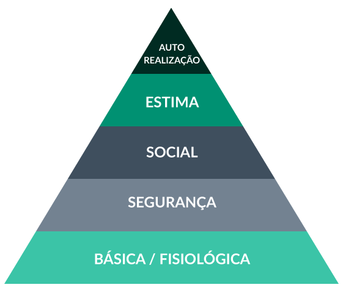

Aula 7: Impactos do Reconhecimento no ambiente e nas relações de trabalho
Bem-vindo(a) à aula 7 do curso 1Nesta aula vamos refletir sobre a importância do reconhecimento na motivação humana no dia a dia no ambiente de trabalho e seus impactos para a gestão.
Ao final da aula, você encontrará recomendações de leituras e vídeos.
Vamos lá?
Bom estudo!
Reconhecimento é uma necessidade humana. Como ele pode ser realizado no contexto do trabalho?
Tratamos na aula 2 de umas das teorias clássicas de motivação que se mantém atual: a Pirâmide de Maslow. Nela o psicólogo americano aponta que uma das necessidades humanas é o RECONHECIMENTO.
Passamos a maior parte de nosso tempo trabalhando e, portanto, é fundamental que o trabalho gere reconhecimento.
O reconhecimento impacta:
Autoestima do indivíduo. Dimensão Pessoal
No fortalecimento do sentimento de inclusão e pertencimento em grupos sociais. Dimensão Social
No engajamento, na produtividade, na qualidade do serviço e na criatividade. Dimensão Organizacional
Pirâmide de Maslow
Como reconhecimento pode ser realizado no trabalho?
O reconhecimento pode ser realizado de diversas formas. Diferente do que muita gente acredita, o salário não é o principal fator associado ao reconhecimento, no que diz respeito à dimensão organizacional.
Um simples elogio ou feedback positivo podem ser reconhecimentos poderosos, se feitos de forma genuína. Vamos conhecer outras formas de reconhecimento não monetários e quais os seus impactos para o desenvolvimento das pessoas e para os resultados organizacionais?
Sobre Feedback, vamos aprofundar mais na aula 8, que será toda dedicada ao tema, para aprendermos como esta ferramenta pode ter um forte impacto na motivação das pessoas e nos resultados organizacionais!
Reflita e responda para você mesmo de forma sincera:
O que faz você se sentir reconhecido?
A partir da sua resposta, pense na sua equipe:
A forma como você os trata deixa claro para eles o reconhecimento que você tem pelo trabalho de cada um?
A base do reconhecimento é o respeito! E respeito implica em aceitar, conviver e valorizar as diferenças de qualquer natureza: raça, gênero, cultura, religião, orientação sexual, nível social, econômico financeiro, formação acadêmica, e simplesmente as diferenças de personalidade, temperamento, competências. RECONHECIMENTO é:
Saber ouvir e Dialogar com o outro, valorizar suas ideias e suas contribuições;
Desafiar e delegar;
Capacitar e desenvolver o potencial do outro, e demonstrar acreditar que ele pode ir além;
Criar oportunidades para novas atividades, novas posições e áreas de atuação;
Possibilitar a realização de um trabalho que faça sentido, que esteja alinhado ao propósito de uma pessoa e proporcione felicidade pessoal.
As formas de reconhecimento precisam estar alinhadas aos valores e a cultura da organização, e serem proporcionais às realizações das pessoas, pois se não houver esta coerência, podem ter impacto negativo e gerarem problemas de gestão na equipe e para imagem da organização considerando seu público interno e externo.
Alguns cuidados são fundamentais quando premiações são usadas para reconhecer pessoas:
Ter critérios claros de avaliação;
Considerar o grau de envolvimento do colaborador com a organização;
Reconhecer a opinião de outras pessoas;
Valorizar perfis diferentes. Não deixar que vieses inconscientes gerem tendências em suas avaliações;
Deixar claro pelo que a pessoa esta sendo premiada. Qual foi o diferencial.
Saiba mais sobre Vieses Inconscientes!
Assista o vídeo “O que são vieses inconscientes?” para conhecer e entender melhor o conceito.
Assista aquiEntender o que faz as pessoas se sentirem-se reconhecidas é tão importante quanto perceber o impacto do reconhecimento sobre a organização.
Nas figuras abaixo, vamos conhecer quais são os fatores que direcionam o desempenho humano:
6 DRIVERS (direcionadores) DO DESEMPENHO.
Informações
“Se eu soubesse exatamente quais as expectativas para o meu trabalho, tivesse feedbacks mais específicos e melhor acesso às informações pertinentes ao meu trabalho.”
Recursos
“Se eu tivesse melhores recursos e ferramentas para trabalhar.”
Incentivos
“Se tivesse incentivos para realizar o meu trabalho e atingir as metas.”
Conhecimentos e Habilidades
“Se recebesse mais treinamento de boa qualidade para realizar o meu trabalho.”
Capacidade (pré requisitos)
“Se minhas características e capacidades pessoais fossem melhor alinhadas com as minhas atribuições e responsabilidades.”
Motivação
“Se fosse mais comprometido e realmente quisesse realizar melhor o meu trabalho.”
Entendido os fatores que impactam o desempenho, vamos analisar os benefícios que a gestão do desempenho promove para a organização:
Identificação e entendimento do que é preciso ser desenvolvido em cada membro da Equipe.
Permite o colaborador construir sua Trilha de Desenvolvimento;
Informações mais precisas para potencializar o desempenho da equipe;
Gestão de pessoas estruturada e compartilhada;
Desenvolvimento da consciência pelos colaboradores dos seus pontos fortes e a desenvolver;
Meritocracia, Transparência e Justiça nas políticas de Recursos Humanos;
Melhor investimento dos Recursos de Capacitação;
Melhoria no Clima Organizacional
Como a MOTIVAÇÃO e os DESAFIOS impactam o ambiente de trabalho?
"Alto desempenho sustentável só acontece ao criar altos níveis de BEM ESTAR SOCIAL.”
Bem-estar social:
Descobrir o que é importante para todos da empresa;
Manter acesa a chama da motivação no momento da contratação;
Desfrutar o trabalho, ser e estar apaixonado por uma causa.
Em contrapartida, é fundamental deixar claras as expectativas, o que se espera dos colaboradores e quais resultados precisam ser alcançados.
Equilíbrio entre Motivação e Desafio
A Motivação é matéria prima para vencer os desafios, por outro lado, algumas teorias também entendem que recíproca é verdadeira, ou seja, para se manter motivada no trabalho as pessoas precisam de desafios.
Estudos apontam a importância do equilíbrio entre a complexidade do desafio e a percepção de possuir as competências necessárias para enfrentar tais desafios, pois se a pessoas entendem que o desafio é mais complexo e difícil do que ela se sente capaz para lidar, isto gera estresse. Por outro, lado, se a complexidade é bem menor do que a capacidade, isto pode gerar tédio e desinteresse.
O bem-estar social depende essencialmente de três pilares:
- Fazer o que gosta;
- Ter bom ambiente social (relacionamento com a equipe, sentimento de inclusão);
- Ter reconhecimento pelo desempenho profissional.
Estes três pilares precisam estar alicerçados na percepção de estar sendo útil a sociedade, estar contribuindo.
O reconhecimento no trabalho é um dos temas mais instigantes da relação sujeito-trabalho, pois ressalta a importância do trabalho no processo de construção da identidade pessoal, bem como a importância do outro no julgamentos sobre o valor do sujeito e daquilo que ele faz quando trabalha.
"A falta de reconhecimento no trabalho parece uma queixa recorrente; mas de onde esta se origina?
Critérios de reconhecimento muitas vezes confundem-se com critérios organizacionais de eficiência e eficácia. Como consequência, ser reconhecido coincidiria com as qualidades valorizadas pela organização do trabalho – por exemplo, alcançar determinadas metas ou apresentar certos padrões de desempenho. Há efeitos problemáticos de estratégias de reconhecimento baseadas em critérios de eficiência e eficácia, pois elas tendem a diferenciar as pessoas conforme seu nível de contribuição para o alcance dos resultados do grupo ou equipe, refletindo uma lógica puramente instrumental. Um dos desafios para a gestão de pessoas é identificar formas de reconhecimento que não se confunda com o da avaliação de desempenho ou a ele se restrinja. Isto na prática observamos, quando algumas pessoas são valorizadas pelo alcance de determinado objetivo, mas sua atitude ética, relacionamento com a equipe, ou qualquer outro aspecto comportamental não está dentro de padrões aceitáveis, olhando sobre esta outra perspectiva ética e comportamental.
O que dizer das situações em que, mesmo reconhecidas, as pessoas não se sentem satisfeitas ou realizadas no trabalho? Denominamos esta situação de “paradoxo do reconhecimento”. Para a abordagem psicodinâmica, “o reconhecimento só tem valor se ele for congruente com o significado do trabalho e as modalidades de seu reconhecimento pelo sujeito, em ressonância com sua história singular"
Como o Reconhecimento impacta a Gestão de talentos?
Um dos grandes desafios da gestão de pessoas é a retenção de seus talentos. Ainda que a palavra tenha uma interpretação negativa - não deixar as pessoas saírem, ela está relacionada ao fato da pessoa NÃO querer sair da sua área/organização! Este também é um desafio da gestão pública!
A figura a seguir demonstra como o reconhecimento é um dos fatores essenciais na gestão dos talentos.
Gestão de pessoas não é um assunto que diz respeito somente aos gestores da área de RH. Esta área têm papel fundamental nas definições das políticas e estratégias, mas são os gestores das áreas que, na gestão das equipes no dia a dia, geram as demandas e acompanham as entregas dos servidores, e portanto, têm papel fundamental nos processos de gestão de pessoas.
Os gestores precisam conhecer as políticas e ferramentas que a organização dispõe para gestão de pessoas e, essencialmente, terem senso de justiça e conhecerem verdadeiramente a sua equipe de trabalho.
Para refletir...
O que você tem feito para reconhecer a sua equipe?
O que você ainda não faz mas poderia adotar para aumentar o reconhecimento?
Estudos mostram como o reconhecimento é um importante elemento para a relação entre motivação e desafios e como estes elementos afetam a percepção de bem-estar no trabalho.
Resumo da aula 7
Chegamos ao final da aula 7.
Nesta aula, compreendemos a importância da prática do reconhecimento para a motivação humana e para construção de um ambiente de trabalho saudável. O reconhecimento impacta diversas áreas da nossa vida. Sua base é o respeito.
Destacamos ações que, no dia a dia no ambiente de trabalho, são consideradas como práticas de reconhecimento e que é essencial entender o que faz as pessoas se sentirem reconhecidas, pois o reconhecimento impacta diretamente no desempenho das pessoas e, consequentemente, no desempenho organizacional.
Além disso, o reconhecimento é um dos fatores essenciais para a gestão de talentos, pois aumenta a percepção do senso de justiça e o sentimento de querer pertencer à área/organização.
Antes de seguir para a aula 8, faça a atividade proposta para essa aula.
AvaliaçãoNão deixe de conferir as indicações de vídeo desta aula!
IndicaçõesAguardamos você na aula 8!